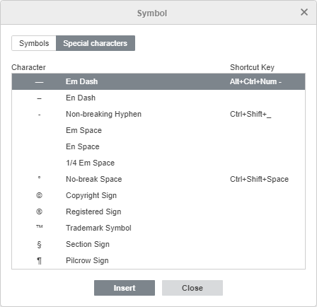

Umetanje simbola i znakova
Tokom rada u Spreadsheet Editor-u, možda će vam biti potrebno da umetnete simbol koji ne postoji na tastaturi. Da biste umetnuli takve simbole u svoju tabelu, koristite opciju Insert symbol i pratite sledeće jednostavne korake:
- Postavite kursor na mesto gde želite da umetnete specijalni simbol.
- Pređite na karticu Insert na gornjoj traci sa alatkama.
- Kliknite na ikonu Symbol.
-
Kliknite na opciju More symbols.

- Pojaviće se dijalog Symbol i moći ćete da izaberete željeni simbol.
-
Koristite odeljak Range da biste brzo pronašli potreban simbol. Svi simboli su podeljeni u posebne grupe, na primer, izaberite „Currency Symbols“ ako želite da umetnete znak za valutu.
- Ako se traženi znak ne nalazi u skupu, izaberite drugi font. Mnogi fontovi sadrže i dodatne znakove koji se razlikuju od standardnog skupa.
- Takođe možete uneti Unicode heksadecimalnu vrednost željenog simbola u polje Unicode hex value. Ovaj kod se može pronaći u Character map.
-
Takođe možete koristiti karticu Special characters da izaberete specijalni znak sa liste.
Prethodno korišćeni simboli se takođe prikazuju u polju Recently used symbols.

- Kliknite na Insert. Izabrani znak će biti dodat u tabelu.
- Da biste umetnuli popularan ili nedavno korišćen simbol, kliknite na strelicu ispod ikone Symbol. Najnoviji simboli će se pojaviti na početku liste.
Umetanje ASCII simbola
ASCII tabela se takođe koristi za dodavanje znakova.
Da biste to uradili, držite pritisnut taster ALT i koristite numeričku tastaturu za unos koda znaka.
Napomena: obavezno koristite numeričku tastaturu, a ne brojeve sa glavne tastature. Da biste aktivirali numeričku tastaturu, pritisnite taster Num Lock.
Na primer, da biste dodali znak paragrafa (§), držite pritisnut ALT dok kucate 789, a zatim otpustite taster ALT.
Umetanje simbola pomoću Unicode tabele
Dodatni znakovi i simboli se mogu pronaći i u Windows tabeli simbola. Da biste otvorili ovu tabelu, uradite sledeće:
- u polje Search unesite „Character table“ i otvorite ga,
-
istovremeno pritisnite
Win+R, zatim u otvoreni prozor unesitecharmap.exei kliknite na OK.
U otvorenom prozoru Character Map izaberite jedan od Character sets, Groups i Fonts. Zatim kliknite na željene znakove, kopirajte ih u clipboard i nalepite na potrebno mesto.